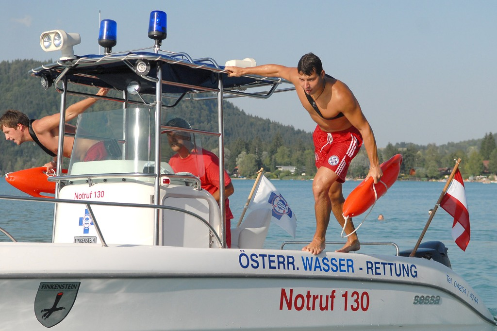
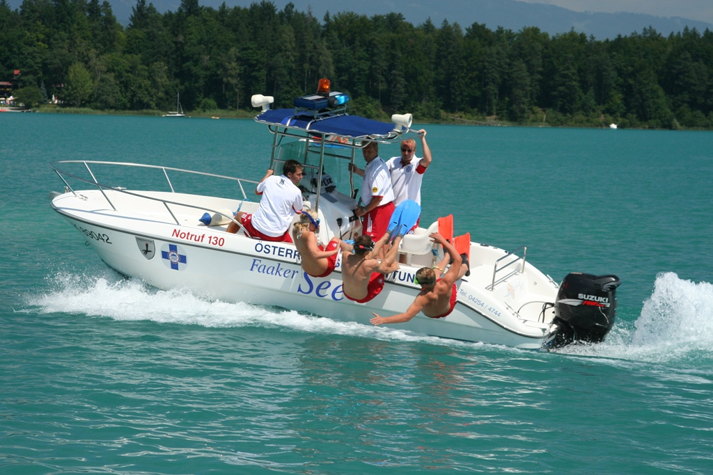

Österreichische Wasserrettung
Die Österreichische Wasserrettung ist ein gemeinnütziger Verein, der es sich primär zur Aufgabe gemacht hat, Menschen vor dem Ertrinkungstod zu bewahren. Freiwillige, ehrenamtlich tätige Helfer riskieren bei den oft nicht ungefährlichen Rettungseinsätzen ihr eigenes Leben, um in Not Geratenen zu helfen. Ihre Aufgabenbereiche erstrecken sich dabei von Taucheinsätzen, Bootsbergungen, Hoch- und Fließwassereinsätzen über Bäder- und Veranstaltungsüberwachung, bis hin zur Schulung und Ausbildung der Bevölkerung.

© Christoph Oberschneider
Jederzeit einsatzfähig, jederzeit einsatzbereit kostbares Menschenleben vor dem nassen Tod zu retten!
Parole der ÖWR
Ausbildung der Bevölkerung
Die ÖWR versucht aber nicht nur in Notfällen zu helfen. Durch Schulung und Information der Bevölkerung soll die Unfall- und Ertrinkungsgefahr beim Baden verringert werden. Daher werden eine Vielfalt an Schwimmkursen angeboten, um Kindern und Nichtschwimmern das Schwimmen zu lehren. Das Angebot dieser Kurse reicht vom Anfängerkurs bis hin zur Rettungsschwimm- bzw. Tauchausbildung. Das Motto: "Jeder Nichtschwimmer ein Schwimmer - jeder Schwimmer ein Rettungsschwimmer!" bezeichnet ein ganz wichtiges Ziel der ÖWR, da auch dann an Orten Hilfe geleistet werden kann, an denen die ÖWR nicht zur Stelle ist.

© Lukas Pilz
"Jeder Nichtschwimmer ein Schwimmer - Jeder Schwimmer ein Rettungsschwimmer!"
Leitsatz der ÖWR
Unsere Aufgabenbereiche
Schwimmen
"Jeder Nichtschwimmer ein Schwimmer" - Durch die Ausbildung von Kindern und Jugendlichen versucht die ÖWR präventiv Badeunfälle zu vermeiden, und neue Rettungsschwimmanwärter zu finden. Eine gute Schwimmausbildung ist somit das Fundament der ÖWR.
Rettungsschwimmen
"Jeder Schwimmer ein Rettungsschwimmer" - Die Rettungsschwimmausbildung ist die Basis am Beginn eines jeden Rettungsschwimmer-Lebens. Durch das Erlernen von Hilfs- und Rettungstechniken, sowie Erste Hilfe werden aus Schwimmern aktive Lebensretter.
Einsatzwesen
Eine fundierte Rettungsschwimmausbildung ist jedoch nur die Basis auf die es auszubauen gilt. Danach können zahlreiche weitere Module und Techniken wie Schwimmtechnik, ABC Schnorcheln, Funk, Einsatzabläufe uvm. absolivert und erlernt werden, um somit zu einer verlässlichen Einsatzkraft zu werden.
Tauchen
Durch die Ausbildung von hochqualifizierten Rettungstauchern schafft die Wasserrettung die Möglichkeit auch Unterwasser jederzeit einsatzfähig zu sein. Vom Grundtauchschein bis hin zum Tauchlehrer werden dabei verschiedenste Stufen von Einsatztauchern ausgebildet.
Nautik
Um die Schlagkraft und Beweglichkeit am Wasser zu erhöhen werden bei der ÖWR auch Schiffsführer und Nautik-Instruktoren ausgebildet. Dadurch können alle möglichen Arbeiten und Aufgaben am Wasser, z.B. Veranstaltungsüberwachungen, bewältigt werden.
Fließ-/Wildwasser
Neben den zahlreichen Seen in Kärnten, gibt es auch unzählige fließende Gewässer. Deshalb werden bei der Wasserrettung auch hochqualifizierte Fließ- und Wildwasserretter ausgebildet um somit auch den Gefahren von fließenden Gewässern gewachsen zu sein.
"Kameradschaft wird bei uns GROSSGESCHRIEBEN!"
Wasserrettung Faaker See
News
Das Blaue Band vom Faaker See
Auch dieses Jahr findet wieder unser traditionelles Schwimmen um das Blaue Band vom Faaker See statt. Alle Informationen und die Wettkampfbestimmungen findet ihr hier:
Zu den Wettkampfbestimmungen
Schwimmkurse
Wie jedes Jahr bieten wir auch diese Saison wieder zahlreiche Schwimm- und Rettungsschwimmkurse an. Alle angebotenen Kurse und weitere Informationen findet ihr hier:
Zu unseren Kursen
{kind=link}
{kind=link}
{kind=link}
{kind=link}
{kind=link}
{kind=link}
{kind=link}
{kind=link}
{kind=link}
{kind=link}
{kind=link}
{kind=link}
"Rettungsschwimmer zu sein bedeutet weit mehr als nur eine Ausbildung zu machen, es ist eine Lebenseinstellung."
Wasserrettung Faaker See
Kontakt
Österreichische Wasserrettung
Landesverband Kärnten
Einsatzstelle 1/8 Faaker See
Seestraße 2a, 9583 Faak am See
+43 4254 4744
faak@oewr-kaernten.at